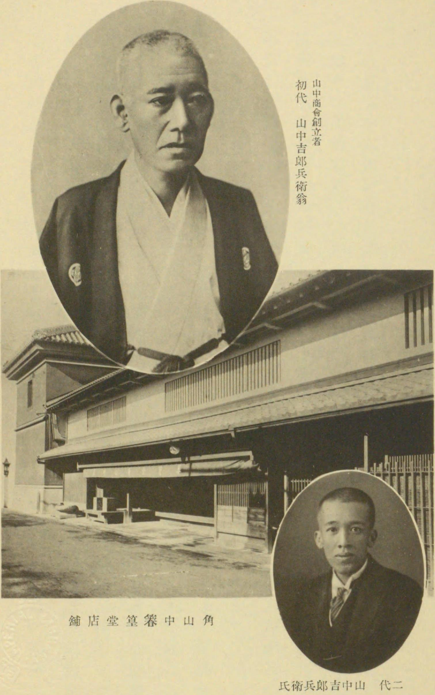
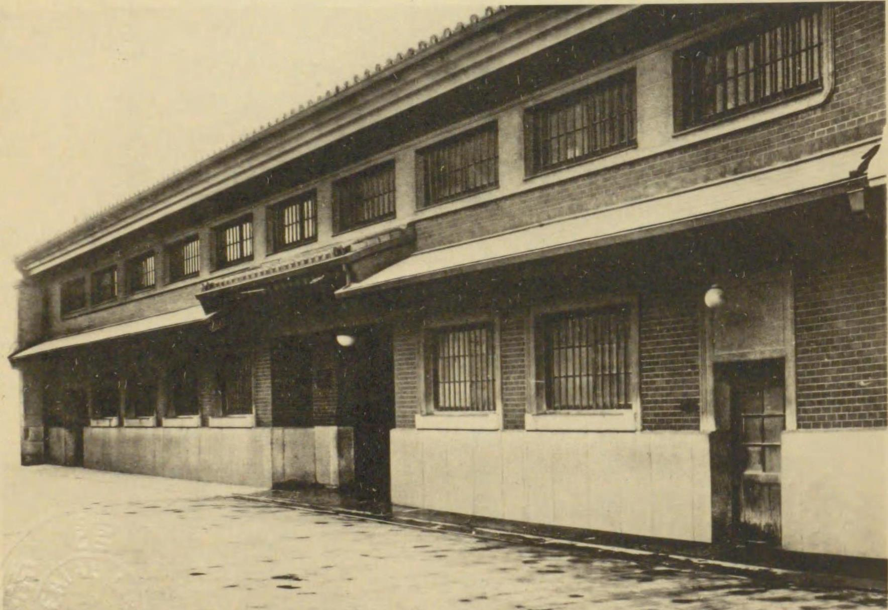

第 8 章
山中商会的货单
大阪市南区心斋桥筋一丁目。一栋三层西式楼房，浅色瓷砖外墙，铜质门牌。门楣上四个汉字：山中商会。橱窗里不是临街店铺那种摆法——货品密密麻麻挤在一起，价签挂在显眼处——而是像美术展览：一尊铜佛，一只青瓷瓶，一幅挂轴，各自占据足够的空间，背后衬着素绢，头顶有灯。行人在橱窗前停下来，看的不是商品，是陈列。
这是明治四十三年，公元1910年。山中商会刚刚在大阪建起这栋新楼，把店面从南区的旧铺迁过来。在此之前，山中家已经在大阪做了两代古董生意。
第一代山中吉兵卫，在天保年间开了一间小店，买卖茶道具和日本佛像。第二代山中吉郎兵卫，把经营范围扩大到中国瓷器，在京都开了分店。第三代山中定次郎，十三岁进店学徒，二十三岁接管生意，三十岁把分店开到纽约。三代人，从大阪南区一间铺面到心斋桥筋一栋楼，用了将近八十年。山中定次郎接手时，店里货单上的条目大约有三百条。到他去世那年，货单条目超过三万条。
四十年间，山中商会从家族古董店扩张为跨国网络。大阪、东京、京都、奈良、横滨——日本五个据点；纽约、波士顿、伦敦、巴黎、北京——海外五处分店。代理处与联络点更散布十余城，从沈阳到济南，从天津到上海，从柏林到罗马。货品、资金与信息在这张网络里流动：中国文物东渡日本，再输往欧美；资金逆向回流，支撑下一轮收购；
需求与货源的信息双向穿梭。山中定次郎每日五点半起身，先阅海外电报——纽约的收藏家渴求唐代石雕，伦敦询问船期，北京通报新得造像的品相与价格。他批注意见，交秘书回复，便去店里巡视。看货时他不说话，只绕桌而行，时而蹲看底座，时而轻叩器壁听声，三分钟内完毕，便在货单上写下价格与去向，字迹工整紧凑。

他绕着桌子走一圈，有时蹲下来看底座，有时用手指轻轻叩一下器壁，听声音判断是否有裂痕。整个过程不超过三分钟。看完之后，他在货单上写几个字——价格、去向、备注。字迹工整、紧凑、一笔不苟。这些货单，后来成为追溯中国佛教文物流散路径的重要档案。山中商会在二战中遭受重创，海外资产被冻结或没收，大阪总店在1945年的空袭中被烧毁。
但一部分货单幸存下来，保存在东京分店的库房里。它们装在牛皮纸盒子里，按年份编号排列。有些货单的边缘已经发黄，有些被虫蛀过，有些沾着水渍。
但字迹仍然清晰。研究者翻开这些货单，看到的是一套完整的商品描述语法。1913年春季货单，编号1913-042：“石雕佛首一，唐代样式，直隶省定州出土，高一尺二寸，品相完好，鼻尖微损。买手赵。价银二百四十两。”
直隶省，今天的河北。定州在河北中部，唐代是北方佛教重镇，城内外寺院林立。这尊佛首来自哪座寺院，货单上没有写。买手赵是谁，全名是什么，货单上也没有写。只有一条简短的记录，说明这尊佛首被买下来、装进箱子、运到了北京分店的库房。
几个月后，它出现在山中商会纽约分店的货单上。描述变了：“唐代石雕菩萨头像，高12英寸，面容安详，发髻高耸，为龙门风格之精品。来源：直隶省。山中商会旧藏。”价格从二百四十两银子变成了三千美元。

从定州到北京，从北京到横滨，从横滨到纽约——将近一万公里。它离开那座不知名的寺院时，可能殿宇已经倾圮，可能僧人早已散去，也可能寺院还在，只是住持需要用钱。不管怎样，它被从身体上取下来，裹上稻草，装进木箱，搬上马车，开始了漫长的旅程。
货单上的描述变化，透露出商品化语法的核心规则。在北京分店的货单上，它还是“石雕佛首一，唐代样式，直隶省定州出土”——一件从特定地点出土的物品。
到了纽约分店的货单上，它变成了“唐代石雕菩萨头像，龙门风格之精品”——一件具有特定风格和审美价值的艺术品。“定州”还在，但变成了“来源”而非“出土地”。“出土”这个词消失了，取而代之的是“山中商会旧藏”——一个流通环节的身份标识，而不是原境的线索。
这种描述转换不是随意的。它服务于销售的需要。纽约的买家不会为“定州出土”买单，但会为“龙门风格之精品”买单。“出土”暗示这是一件从地下挖出来的东西，“龙门风格”则把它与著名的龙门石窟联系起来，赋予它更高的艺术史地位。至于它是否真的来自龙门——货单上没有说。它只说“龙门风格”。风格是可以迁移的，可以临摹的，可以跨地区传播的。一尊定州出土的佛首，在风格上接近龙门，这并不奇怪。但“龙门风格”这四个字，已经足够让买家把它与龙门石窟联系在一起，愿意为这种联系支付更高的价格。
这不是欺诈。这是商品描述的正常修辞。在任何一个艺术品市场，风格归属都是定价的关键因素。
山中商会只是比大多数古董商更擅长这种修辞。1914年的一份货单，记录了从山西太原运出的七件石雕造像。编号1914-018至1914-024。品名分别为：“石雕佛坐像一，北齐样式，高三尺”；“石雕菩萨立像一，唐样式，高二尺五寸，缺左臂”；“石雕佛首二，唐样式，各高约一尺”；“石雕力士像一，唐样式，高二尺八寸，腿部有残”；“石雕供养人像二，宋样式，各高二尺”。备注栏里有一行字：“以上七件，太原府天龙山。”
天龙山石窟，现存洞窟二十五座，九座造像几近凿毁，流失海外的佛首、菩萨头像与浮雕残件逾一百五十件。它们散落于纽约大都会、东京国立、伦敦大英、罗马国立东方艺术等博物馆及私人收藏。展签上常有一行字：“山中商会旧藏。”
1914年的货单上，“天龙山”仅是产地标注，与“直隶省”、“太原府”无异，只为告知来源。至于来自哪座洞窟、原安何位、与周围造像何关——这些信息货单不关心。它只记品相、尺寸、年代、风格、价格。品相定价，尺寸牵连运费——三尺以上石雕需大箱，运费倍增。年代与风格则匹配客好：纽约偏爱唐代丰腴端庄，波士顿喜欢北齐秀骨清像，伦敦倾心宋代写实。这些偏好随展览、出版与学术潮流迁变，山中商会的工作便是捕捉变化，调整供应。山中定次郎每年春、秋两赴欧美，行前让人整列纽约与伦敦的客户需求：某夫人求唐代石雕观音，预算五千美元内；
清单上还有博物馆征集北齐至唐造像，收藏家寻石窟浮雕残片，尺寸不超三英尺。他携清单返京，召集买手开会。山中商会的买手网络是其核心竞争力，覆盖华北、华中、东北要城：北京、天津、济南、太原、开封、洛阳、西安、沈阳。这些买手多为中国籍，通古玩行情，与当地古董商、寺庙住持、官员往来，知何处寺庙修缮缺钱，哪座石窟正遭盗凿，何县衙门查获文物待拍。信息汇总至北京分店，核实下单，货品经天津港运横滨。在横滨，货品重分：一部分留日本，入东京、京都分店；一部分东渡旧金山或西雅图，进北美市场；一部分西行苏伊士运河，往伦敦巴黎。这条链的起点是山西或河北某寺，终点是纽约或波士顿的某个客厅。
中间经过的每一个节点——买手、分店、港口、转运站、展厅——都在货单上留下痕迹。但这些痕迹只记录经手人和经手地点，不记录原境。原境在链条的起点就被搁置了。1916年，山中商会经手了一笔大买卖。货单编号1916-037，品名：“石雕菩萨立像，唐，龙门样式，高五尺二寸，品相极佳，缺右手三指。”产地标注：“河南府洛阳龙门。”买手：“王。”价格：“银一千二百两。”
这尊菩萨立像来自龙门石窟。1910年代，龙门石窟正处于被大规模盗凿的时期。当地村民、外地古董商、外国探险家，都在从石窟里凿取佛首和造像。凿下来的东西，有的卖给北京的古董店，有的直接运往海外。
山中商会不是盗凿者。它的买手们也不直接参与盗凿。但他们知道哪些洞窟正在被盗凿，哪些造像已经被凿下来，哪些货正在市场上流通。他们的工作，是在这些货进入市场之后，以最快的速度锁定、议价、买断，然后纳入山中商会的销售网络。
1916-037号货品就是这样来的。买手王在洛阳得到消息：有人从龙门某洞窟凿下一尊菩萨立像，正准备运往北京。他赶到洛阳，看了货，谈了价，付了银子。一周后，这尊菩萨立像已经在北京分店的库房里。几个月后，它出现在山中商会纽约分店的展厅里。
展厅位于第五大道，临街的橱窗里摆着石雕、瓷器和漆器。那尊菩萨立像被放在展厅正中央，背后挂着一幅素色帷幔，头顶有一盏射灯。
它的右手缺了三根手指，但整体品相极佳——衣纹流畅，面容端庄，唐代的丰腴与庄严兼而有之。纽约的一位收藏家买下了它。价格是八千美元。从一千二百两银子到八千美元，中间经过了北京分店的收购、天津港的装箱、横滨港的转运、纽约分店的陈列和销售。每一个环节都有人经手，每一个环节都产生费用和利润。山中商会赚的是差价，也是信息的差价——它知道洛阳正在流出什么，也知道纽约正在需求什么。这两种信息加在一起，就是商业网络的核心价值。
但山中商会不仅仅是赚差价。山中定次郎对佛教艺术有真正的鉴赏力。他年轻时在大阪学过书画鉴定，后来到京都跟一位老茶人学茶道，从茶道具入手接触中国瓷器。他对器物的线条、釉色、手感有近乎本能的敏感。一件瓷器放在他面前，他不用看底款，单看器型和釉面就能断代。一尊石雕放在他面前，他能从衣纹的褶皱判断出是北齐还是唐代。他的客户尊重他的眼光。
美国收藏家查尔斯·朗·弗利尔——后来以他的名字命名的弗利尔美术馆，是华盛顿最重要的亚洲艺术收藏之一——多次从山中商会购买中国佛教造像。弗利尔在日记里写道，山中先生对石雕的判断从未出错。他说唐代的，就是唐代的。他说北齐的，就是北齐的。
这种信任建立在专业能力之上。山中定次郎确实懂行。他每年在中国各地旅行，考察石窟、寺院和古董市场。他去过龙门，去过云冈，去过天龙山。他见过那些造像在原境中的样子——在洞窟里，在佛龛中，在香火和日光的浸润下，石头的表面慢慢变化，生出一种温润的质感。
他在1918年的一封信里写道，天龙山的石窟是他见过最美的。那些菩萨站在岩壁上，被天光映照着，衣纹如水波流动。可惜石窟破败不堪，无人看管。有些造像已经被人凿去头部，只留下身躯。看着令人心痛。
这封信的收件人是山中商会纽约分店的经理。信的后半段，山中定次郎写道，他已安排买手在太原接洽，有几件品相不错的造像即将运出。请提前联系客户，预计售价可定在三千至五千美元。
这就是山中商会的双重性。山中定次郎欣赏天龙山石窟的美。他为石窟的破败感到心痛。但他的商业行动，恰恰加速了这种破败。他派出的买手，在他“心痛”的石窟附近接洽货品。他亲手定价的那些造像，正是从那些“被人凿去头部”的石窟里流出来的。
这不是虚伪。这是商业逻辑与审美情感在同一颗心里共存。山中定次郎大概真心认为，这些造像与其留在破败的石窟里继续被破坏，不如运到欧美博物馆和收藏家手中，得到妥善保存和展示。他会说，这是保护，是让这些艺术品获得它们应有的尊重。
事实也确实如此。经山中商会售出的许多造像，今天保存在世界一流博物馆里，恒温恒湿，灯光柔和，有专业修复师定期维护。它们的物理状态，比留在原地的那些要好得多——留在天龙山的造像，在随后的几十年里继续遭受风雨侵蚀、人为破坏和环境污染。有些已经完全看不出原来的模样。
但什么算“保护”？把佛首从身体上凿下来，装进箱子，运到一万公里之外，放在丝绒垫子上——这是保护，还是另一种形式的破坏？
这个问题，山中定次郎大概没想过。或者想过，但觉得不构成问题。在他的认知体系里，这些造像首先是“艺术品”，其次才是“宗教圣物”。艺术品是可以移动的，可以从一个地方搬到另一个地方，从一个主人手里转到另一个主人手里。这是艺术品市场的逻辑。至于它们作为宗教圣物的那一面——那些被僧人供奉、被信众膜拜、在特定空间里承载特定意义的那一面——在进入货单的那一刻，就已经被搁置了。
山中商会的货单，就是这种搁置的物证。货单上从来不写寺庙的名字。不写洞窟的编号。不写造像原来的位置。这些信息对商业流通没有用处。买家和卖家关心的，是年代、风格、尺寸、品相、价格。至于这尊佛原来供奉在哪座寺院、那座寺院供奉的是哪位本尊、这尊佛在寺院的空间布局中占据什么位置——这些“原境信息”，在商品化的过程中被系统性地省略了。
这不是山中商会独有的做法。卢芹斋的账本也是这样写的。整个国际艺术品市场都是这样运作的。但山中商会把这种商品化语法推向了更大的规模。
卢芹斋经手单尊造像，山中商会经手整批货单；卢芹斋客户数十，山中商会客户数百，遍布十余城。规模带来质变：货单从几百条增至几千条，分店从大阪东京扩至纽约、波士顿、伦敦、巴黎，山中商会不再仅是渠道，而成信息枢纽。其中国买手网络既收购货品，也收集情报——哪些石窟遭盗凿，哪些寺院售旧藏，哪些文物流入市场。信息汇至北京分店，再传东京总部与纽约分店，指导采购销售策略。信息流速决定货品流速。1910年代，太原买手发回消息：天龙山石窟正被盗凿，佛首流入市场。北京分店即派人收购，消息同步抵东京。山中定次郎判断：天龙山佛首品相佳，唐风，尺寸适，合欧美市场。他电令纽约分店：准备接货，提前联络客户。
整个过程，从买手发现货源到纽约分店接到指令，只需要几周。在电报和汽船的时代，这个速度是惊人的。它意味着，当天龙山石窟的某尊佛首被凿下来，几个月后，它就可能出现在纽约第五大道的橱窗里。
这种速度，反过来又刺激了源头端的盗凿。当地的盗凿者发现，佛首能卖钱，而且卖得很快。他们不需要知道买家是谁，不需要知道这些佛首最终去了哪里。他们只需要知道，有人在山下的镇子里等着收货，付的是现银。
山中商会当然不是盗凿的始作俑者。但它构建的商业网络，为盗凿提供了持续的需求和畅通的销路。没有这个网络，盗凿可能仍然是零星的、偶然的、小规模的。有了这个网络，盗凿就变成了一个可以稳定运转的产业。
1920年代，山中商会的货单上出现了一个新的品类：壁画残片。货单编号1923-112，品名：“壁画残片一，明，山西平阳府，高四尺宽三尺，画面为菩萨说法图，色彩尚存。”备注栏里有一行字：“原为寺院墙壁，寺院已毁，壁画由当地古董商拆下。”
山西平阳府，今天的临汾。明代时，平阳府是山西佛教重镇，寺院林立，壁画精美。到了民国初年，许多寺院年久失修，殿宇倾圮，壁画暴露在风雨中。当地古董商把还能保存的壁画拆下来，裁成大小不等的残片，卖给外来的买手。山中商会的买手在平阳府收购了一批这样的壁画残片。货单上记录了七件，尺寸从二尺到五尺不等，画面包括菩萨说法图、罗汉图、供养人像和花卉纹样。这批货从平阳府运到北京，再从北京运到横滨。在横滨，山中定次郎亲自看了货。他在货单上批了一行字：“色彩尚好，但画面残损较重。建议修复后出售。”
修复是在京都完成的。山中商会在京都有自己的修复工坊，雇佣了几位专门修复书画和壁画的技师。他们把壁画残片裱在木板上，用矿物颜料补全残缺的部分，再罩上一层保护漆。修复之后，这些残片看起来完整了许多。它们不再是“从破庙墙上拆下来的碎片”，而是“可以挂在客厅墙上的艺术品”。
1924年，这批壁画残片出现在山中商会伦敦分店的展厅里。标签上写着：“明代佛教壁画，山西。山中商会修复。”价格从二百英镑到八百英镑不等。大英博物馆买下了其中两件。今天，这两件壁画残片仍然保存在大英博物馆的库房里。展签上写着：“菩萨说法图，明代，山西。山中商会旧藏。”
至于它来自山西哪座寺院、原来在寺院墙壁上的什么位置、周围还有哪些壁画与之构成整体——这些信息，展签上没有。货单上也没有。这是商品化语法的必然结果。当壁画从墙壁上被拆下来，裁成矩形残片，裱在木板上，它就变成了一件独立的、可以单独定价和出售的艺术品。它与原境的关系被切断了。
它不再是某座寺院叙事空间的一部分，不再是信众礼拜的对象，不再是特定宗教实践的组成部分。它变成了一件“中国佛教壁画”，可以挂在大英博物馆的墙上，也可以挂在某个伦敦收藏家的客厅里。
山中商会在这个过程中扮演的角色，比卢芹斋更为复杂。卢芹斋的路线是单向的：从中国到欧美。山中商会的路线是多向的：从中国到日本，从日本到欧美，有时也从日本回流中国。山中定次郎不仅把中国佛教造像卖给欧美收藏家，也把一部分精品留在日本，进入日本的寺院、博物馆和私人收藏。这些留在日本的造像，后来被纳入“东洋美术”的叙事框架——一种以日本为中心的亚洲艺术史叙事。
这是山中商会与卢芹斋的另一个不同之处。卢芹斋不关心学术叙事。他卖东西，赚钱，偶尔写几篇文章介绍中国艺术，但从不试图构建一套完整的艺术史框架。山中定次郎不同。
他积极参与日本的“东洋美术”讨论，与中国学者和日本学者都有交往，资助过考古调查和学术出版。
他认为，中国佛教艺术是“东洋美术”的重要组成部分，而日本有责任也有能力成为“东洋美术”的研究中心和收藏中心。1910年，山中定次郎在大阪创办了一份刊物，叫《东洋美术》。刊物的宗旨是介绍和研究中日两国的古代艺术，尤其是佛教艺术。
第一期的封面是一尊唐代石雕菩萨像——正是山中商会当年从直隶省收购的那一尊。在创刊词中，山中定次郎写道，东洋美术以中国为源，以日本为流。千年来，佛教艺术自中土传入日本，在日本得到继承与发展。今日，中国本土的佛教遗迹日渐荒废，他们有责任收集、保存和研究这些遗存，使东洋美术之精华不致湮灭。
这段话的措辞值得仔细读。“以中国为源，以日本为流”——承认中国是源头，但暗示日本是传承者。“中国本土的佛教遗迹日渐荒废”——这是事实，但也为收集行为提供了合法性。“有责任收集、保存和研究”——把商业行为表述为文化责任。这不是虚伪。这是山中定次郎真实的自我认知。
他确实认为自己在做一件有意义的事：把这些被荒废、被破坏、被遗忘的艺术品收集起来，保存下来，让它们得到应有的尊重和研究。他卖这些东西赚钱，但这不妨碍他真心热爱它们。这种热爱与商业的共生，在山中定次郎身上体现得淋漓尽致。
他可以在上午巡视库房，检查新到的佛首，用手抚摸石雕的表面，赞叹衣纹的流畅；下午就坐在办公室里，给纽约分店发电报，指示某件佛首的底价和销售策略。他可以在信里为天龙山石窟的破败感到心痛，同时安排买手在太原收购从天龙山流出的造像。
他的客户们也是如此。弗利尔在购买那尊龙门菩萨立像时，在日记里写道，这是一件杰作。它让他想起在龙门石窟亲眼所见的那些造像——庄严、宁静、超越尘世。现在它来到了他的客厅里，他每天都能看到它。这是一种特权，也是一种责任。
责任。这个词反复出现。收藏家说，收藏是一种责任。古董商说，流通是一种责任。博物馆说，展示是一种责任。但这些“责任”加在一起，并没有阻止石窟继续被盗凿，寺院继续被拆毁，壁画继续被切割。
相反，它们为这些行为提供了持续的、稳定的市场需求。1927年，山中商会纽约分店举办了一场展览。展览的名字叫“中国佛教石雕艺术”。展品包括三十多件石雕造像和佛首，年代从北魏到宋代，全部来自山中商会的库存。展览图录的序言由一位美国艺术评论家撰写，他写道，这些作品让观者看到，中国佛教雕塑达到了怎样的高度。它们可以与希腊古典雕塑相媲美，甚至在某些方面超越了后者。展览很成功。大部分展品被售出，买家包括大都会博物馆、波士顿美术馆和几位私人收藏家。展览结束后，山中定次郎给北京分店发去电报：“天龙山、龙门货品需求旺盛，请加大收购力度。”
加大收购力度。这五个字，是整条链条的终点。从太原买手在石窟附近接洽货品，到北京分店汇总信息、下单收购，到天津港装箱、横滨港转运，到纽约展厅里的灯光和丝绒垫子，到收藏家客厅里的赞叹和图录里的赞美——整条链条的终点，是这五个字。加大收购力度。这意味着更多的佛首被凿下来，更多的壁画被拆下来，更多的造像被从寺院里搬出来。这不是山中定次郎一个人的决定。这是整个体系运转的结果。山中定次郎只是这个体系里一个勤勉的、有眼光的、真心热爱佛教艺术的经营者。他的热爱，与体系的破坏性，并行不悖。1930年代，山中商会的货单上出现了一个新的产地标注：“满洲国奉天。”
奉天，今天的沈阳。1931年日本侵占中国东北后，扶植了伪满洲国政权。山中商会的网络迅速扩展到东北，在奉天和长春设立了分店。货单上的物品来自东北各地的寺院和遗址——辽代的砖塔、金代的石雕、明代的铜佛。
产地标注不再是“直隶省”或“山西”，而是“满洲国”。这是山中商会商业网络的另一面。它的扩张，与日本帝国的扩张同步。它的买手网络覆盖到哪里，往往意味着日本的势力范围扩展到哪里。
山中定次郎未必有意为帝国服务，但他的商业网络确实受益于帝国的扩张——东北的市场开放了，货源增加了，运输路线更畅通了。
1937年，山中定次郎在大阪去世。他死的时候，山中商会仍然是全球最大的亚洲古董商之一，在十二个城市设有分店，货单上的条目数以万计。他生前经手的中国佛教造像和壁画残片，如今散落在世界各地的博物馆和私人收藏中。
他死后不到十年，山中商会在二战中遭受重创。日本战败，山中商会在海外的资产被冻结或没收，分店一家接一家地关闭。
到1950年代，曾经庞大的商业网络只剩下大阪和东京的两家小店。但那些货单留了下来。它们保存在档案室里，装在牛皮纸盒子里，按年份编号排列。每一份货单上都写着品名、尺寸、年代、产地、价格。有些货单的边缘已经发黄，有些被虫蛀过，有些沾着水渍。但字迹仍然清晰——那是山中定次郎的笔迹，工整、紧凑、一丝不苟。
今天，当研究者翻开这些货单，试图从中追溯某件佛首的来源时，他们会发现，线索在产地标注那里就断了。“直隶省”——但直隶省那么大，是哪座寺院？“太原府天龙山”——但天龙山有二十五座洞窟，是哪一座？“山西平阳府”——但平阳府有几十座寺院，壁画原来在哪面墙上？
这些信息，货单上没有。因为它们不在商业体系关心的范围之内。这是商品化的完成。文物成为艺术品的那一刻，它的原境就变成了可以被省略的背景信息。山中商会把这种省略推向了极致。
它的货单精确地记录了价格、尺寸、品相、年代，却系统地忽略了来源。这种忽略不是疏忽，而是商业语法本身的特征。
在大英博物馆的库房里，那两件从山中商会购得的壁画残片静静地靠在墙边。展签上写着：“菩萨说法图，明代，山西。山中商会旧藏。”没有寺院的名字。没有墙壁的位置。没有画面原来与周围壁画的关系。它只是一件“山中商会旧藏”。像卢芹斋的“卢芹斋旧藏”一样，这行字成为它在国际艺术市场上的身份标识。对于博物馆来说，这个标识意味着来源清晰、流传有序。但对于那些试图穿过这行字、抵达这尊佛原来的寺庙、原来的洞窟、原来的墙壁的人来说，这行字是一扇关着的门。门后面是什么，货单上没有写。